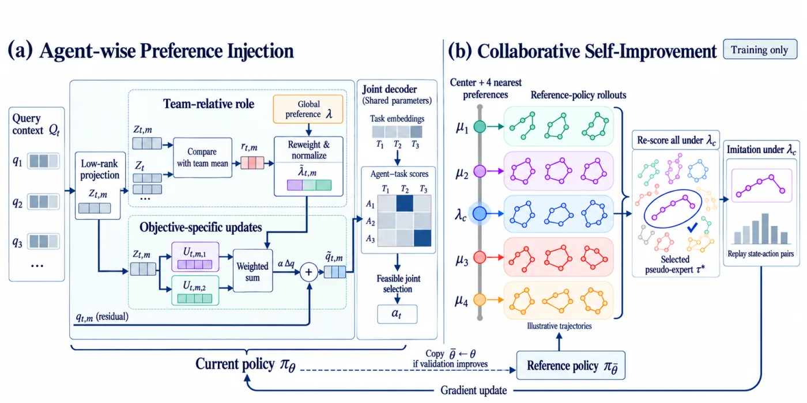

Featured paper · PAMAO
Preference-Adaptive Multi-Agent Optimization
An architecture-agnostic framework for multi-objective multi-agent combinatorial optimization, with preference adaptation at decision time and collaborative self-improvement during training.

Abstract
Learning from the structure of multi-agent decisions.
Existing neural solvers for multi-agent combinatorial optimization coordinate multiple agents toward a single global objective. PAMAO addresses the multi-objective setting by accounting for the agents' distinct, evolving states during decision-making and by reusing solutions from nearby preference subproblems during learning.
Agent-wise Preference Injection (AWPI) contextualizes a shared preference with each agent's state relative to its teammates. Collaborative Self-Improvement (CSI) gathers neighboring trajectories, re-scores them under the center preference, and replays the selected pseudo-expert.
Combinatorial optimization
Method and early comparison figures.

This page currently uses the available paper figures as a visual project preview.